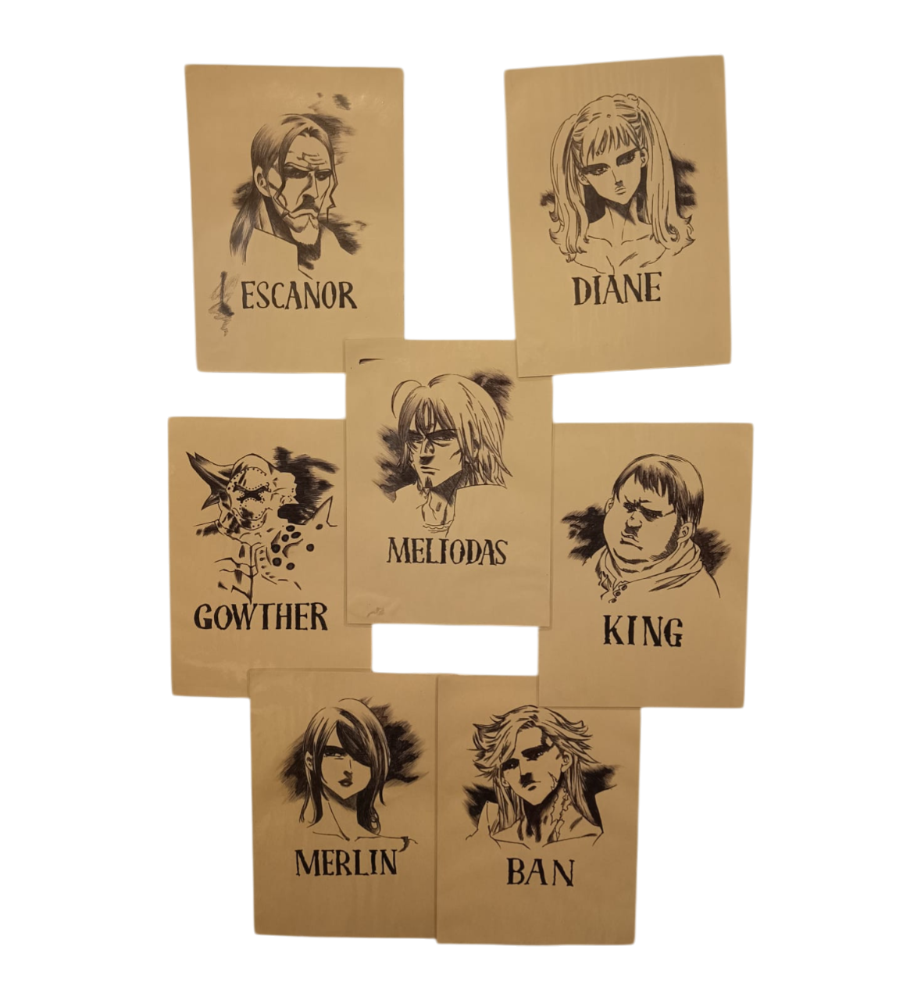
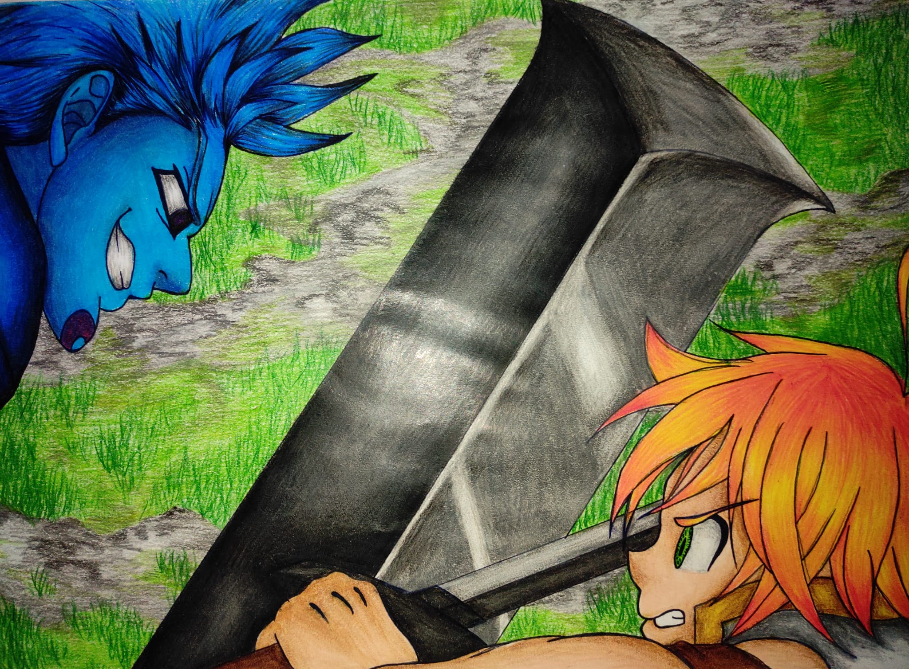

<!DOCTYPE html>
<html>

</html>
<head>
    <link rel="stylesheet" href="style.css">
    <script src="script.js"></script></body>
</head>
<body>
    <div class="immaginegrande">
        <div class="quadrato-bianco7">
            <h2>per ogni anime o serie tv che guardo creero una fan art che poi inseriro qui con un piccolo commento con le mie opinioni su cio che ho guardato</h2>
        </div>
        <div>
            
            <div class="quadrato-bianco7">

            </div>
            
            <div class="quadrato-bianco7">

            </div>
            
            <div class="quadrato-bianco7">

            </div>
        </div>
    </div>
</body>